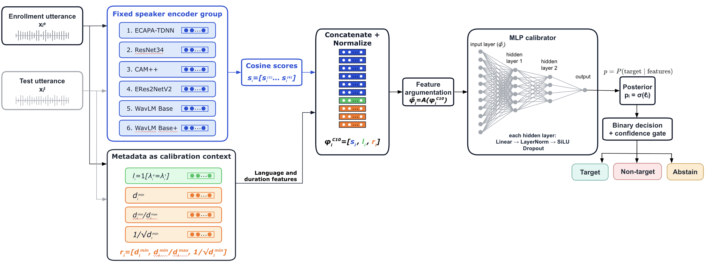
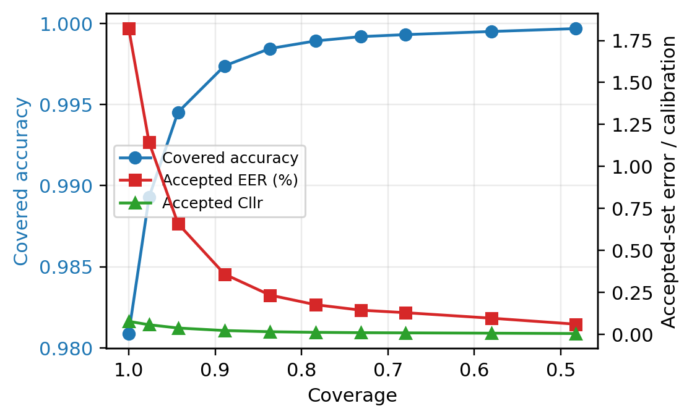
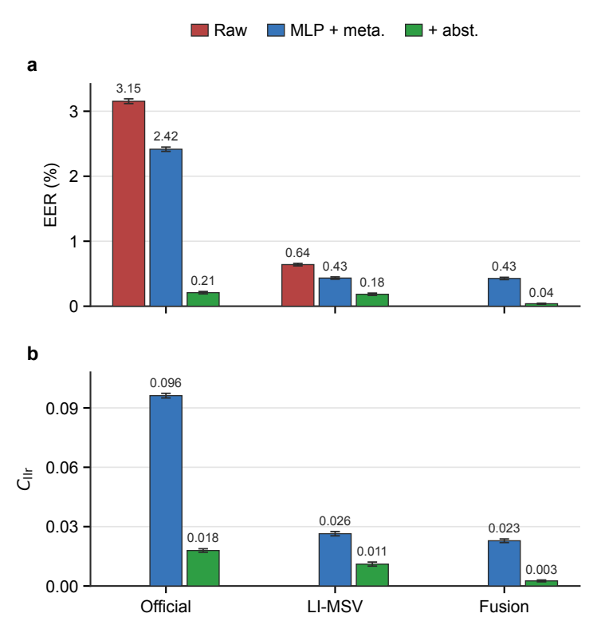
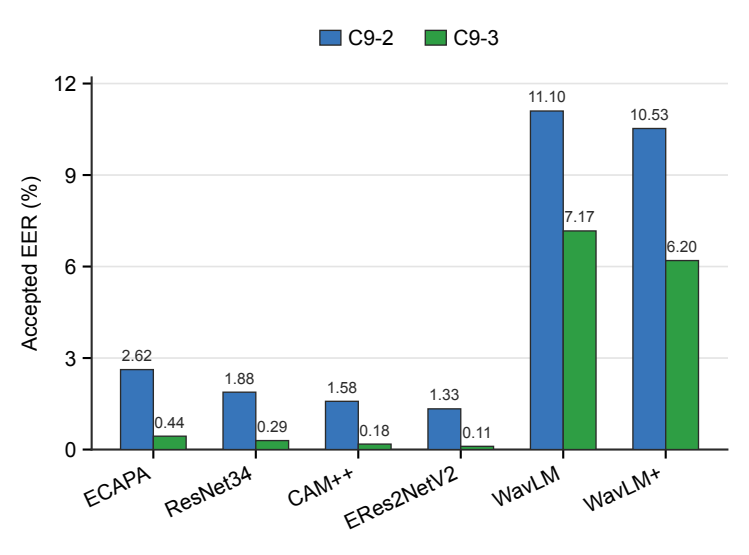

Reliable cross-lingual ASV through metadata-aware calibration.
AMECxSV combines scores from six fixed speaker encoders with language-match and duration-reliability context. A compact MLP produces a calibrated posterior, while a confidence gate supports selective abstention when automatic decisions are unreliable.
Method overview
Trial-level cosine scores and compact calibration context are concatenated, normalized, deterministically expanded, and passed to a two-hidden-layer MLP. Scores and metadata share one flat input vector; there are no separate branches.

Main results
The metadata-aware C10 system improves over score-only fusion at full coverage. Selective abstention further reduces error on the accepted subset and must be interpreted together with coverage.
| System | Setting | Coverage | EER | Cllr | actDCF .001 | actDCF .01 |
|---|---|---|---|---|---|---|
| C8-2 | Multi-score | 1.00 | 2.13 ± 0.03% | 0.09 | 0.61 | 0.37 |
| C8-3 | Multi-score + abstention | 0.81 | 0.21 ± 0.02% | 0.02 | 0.59 | 0.21 |
| C10-2 | Multi-score + metadata | 1.00 | 1.85 ± 0.03% | 0.08 ± 0.00 | 0.47 | 0.28 |
| C10-3 | C10-2 + abstention | 0.80 | 0.10 ± 0.01% | 0.01 ± 0.00 | 0.33 | 0.10 |
Selective and external analysis
The repository includes coverage-aware evaluation, a separate multi-enrollment side validation, and matched experiments on two external systems.


{kind=link}

C9 side validation
Accepted EER across six embedding front ends under a separate protocol.
Open figure{kind=link}
Reproducible code
Source code covers C0–C5, C8, C9, C10, feature ablations, metadata controls, coverage curves, external baselines, and similarity-fusion checks. Dataset files and pretrained checkpoints are intentionally excluded.
Core experiments
experiments/ contains calibration, fusion, ablation, abstention, and follow-up analyses.
Data preparation
data_prep/ builds protocols, fixed splits, embeddings, score tables, and C9 inputs.
External validation
external/ and similarity/ contain matched baseline and limitation experiments.
pip install -r requirements.txt
python run.py --list
python run.py --main
python run.py --followup